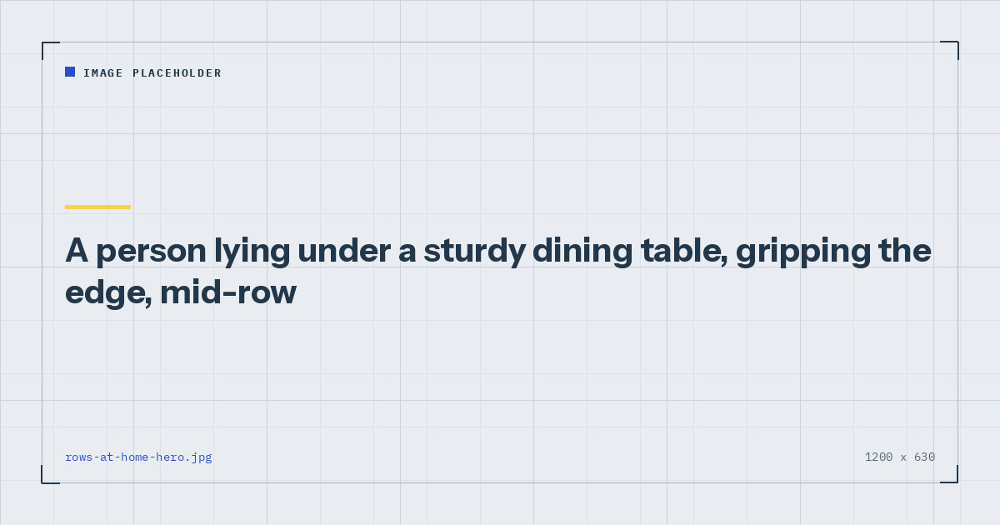

Bodyweight Strength
Rows at Home: 7 Ways to Train Your Back Without a Gym
Pulling is the one movement pattern that genuinely needs something to pull against. Here are seven options, honestly ranked, including the ones that barely work.

Home training has one genuine gap, and it is not equipment for legs or chest. It is that there is no bodyweight pulling exercise requiring nothing at all. Pushing needs a floor; pulling needs something above or beside you to pull against.
The result is that pulling gets skipped, and six months later people have respectable push-ups, no rowing strength, and shoulders that ache from spending all day rounded forward and all their training pressing.
Why this matters more than you think
The muscles of the upper back — lats, rhomboids, mid and lower trapezius, rear deltoids — are a large amount of tissue, and they are the group that opposes the position most people hold all day at a desk.
A training programme heavy in pushing and light in pulling reinforces that position rather than counteracting it. That is not a claim that push-ups cause bad posture, which would be overstating it. It is that if you are going to spend three sessions a week training, spending them entirely on the front of your body is a missed opportunity at best.
Adult guidance asks for muscle-strengthening activity involving all major muscle groups,1 and the back is unambiguously one of them.
The seven options, ranked
| # | Option | Resistance | Cost |
|---|---|---|---|
| 1 | Inverted row under a table | High | Free |
| 2 | Resistance band row | High | Low |
| 3 | Doorway bar row | High | Low |
| 4 | Door frame row | Moderate | Free |
| 5 | Towel row on a handle | Moderate | Free |
| 6 | Bed sheet row | Moderate | Free |
| 7 | Prone back extensions | Low | Free |
1. Inverted row under a table
Lie under a sturdy dining table, grip the edge with hands about shoulder-width, and pull your chest toward the underside while keeping your body in one straight line from head to heels.
This is the best free option by a clear margin. It scales precisely: bend your knees to make it easier, straighten your legs to make it harder, elevate your feet on a chair to make it harder still.
Safety: test the table with gradual weight before committing. A cheap flat-pack table can flex or tip. Solid wood dining tables are usually fine; glass tops and lightweight desks are not.
2. Resistance band row
Anchor a band around a door hinge side or a heavy fixed object, hold both ends, and row back with elbows driving past your ribs.
The most versatile option and the one I would buy first for anyone whose home has no suitable table. Bands let you train rows, face pulls and pulldowns from one piece of kit that fits in a drawer. Details of types and strengths are in the resistance bands guide.
The limitation is that resistance increases as the band stretches, so the movement is easiest where you are weakest and hardest at the top. That is not ideal but it is far better than not pulling.
3. Doorway bar row
Set a doorway pull-up bar at a low height in the frame, or use a standard-height bar and lean back underneath it holding on with straight arms and feet walked forward.
A doorway bar is the single best purchase for home training, because it unlocks both rows and eventually pull-ups. Fit and safety matter — see the doorway pull-up bar guide before buying one, because not every door frame is suitable.
4. Door frame row
Stand facing an open door, grip both sides of the frame at chest height, place your feet either side of the door close to it, and lean back with straight arms. Pull yourself upright.
Free, requires nothing, and works surprisingly well. The limitation is that the range of motion is short and it is hard to make progressively harder beyond leaning back further.
Safety: use the frame, not the door itself. Hanging your weight off a door will damage the hinges and may well damage you.
5. Towel row on a door handle
Loop a strong towel around a door handle on the hinge side, hold both ends, place your feet either side of the door, and lean back. Row yourself upright.
The classic no-equipment option. It genuinely works, and the grip demand is a useful side effect. Two caveats: close the door and wedge it so it cannot swing, and check the handle is properly fixed rather than a loose knob.
6. Bed sheet row
A variation on the above using a folded bed sheet over the top of a closed door, gripping both ends. Slightly more comfortable on the hands than a towel and allows a longer range.
Same safety points: door closed and wedged, and check the door is solid rather than hollow.
7. Prone back extensions
Lie face down, arms out in a Y or T shape, and lift your arms and chest off the floor, squeezing the shoulder blades together. Hold briefly and lower.
This is the genuinely low-resistance option and I include it for completeness rather than enthusiasm. It trains the mid and lower trapezius and rear deltoids, and it is better than nothing if you have literally no table, no door you can use and no equipment. It will not build meaningful pulling strength.
If you take one thing from this page: a dining table you already own is better pulling equipment than most people ever use.
How to programme pulling
Match your pulling volume to your pushing volume, or exceed it. If you do three sets of push-ups, do at least three sets of rows.
Eight to fifteen repetitions, two or three sessions a week. Weekly volume drives adaptation,2 and the back responds to it like any other muscle group.
Technique: lead with the elbows rather than the hands. Think about driving the elbows back past your ribs and squeezing the shoulder blades together at the top. Pulling with the hands turns a back exercise into an arm exercise.
Pause for a beat at the top of each repetition. Rows are unusually easy to do with momentum, and the pause removes it.
If pull-ups are the goal, rows are the foundation you build them on — the route is in how to do your first pull-up at home. For the wider set of back options, see back exercises with no equipment.
Where to go next
To slot pulling into a full week, use the three-day split, which places it first on upper-body days deliberately. For progression ladders across every pattern, see bodyweight exercise progressions.
Frequently asked questions
How can I do rows at home without equipment?
An inverted row under a sturdy dining table is the best free option and scales precisely by changing your leg position. A towel looped around a door handle, a bed sheet over a closed door, or gripping both sides of a door frame all work if no suitable table is available.
Is a table strong enough for inverted rows?
A solid wood dining table usually is. Test it with gradual weight before committing your full bodyweight. Glass-topped tables, lightweight desks and cheap flat-pack furniture are not suitable.
What can I use instead of a pull-up bar for back exercises?
Resistance bands anchored at a door hinge are the most versatile substitute, covering rows, face pulls and pulldowns from one inexpensive item. Table rows are the best free alternative.
How many rows should I do compared to push-ups?
At least as many sets as your pushing work, and more if you sit at a desk all day. A programme heavy in pushing and light in pulling reinforces the position you already spend your day in.
Are towel rows on a door handle effective?
Reasonably, yes. They provide genuine resistance and add a useful grip demand. Close and wedge the door so it cannot swing, and check the handle is firmly fixed rather than a loose knob.
What muscles do rows work?
The lats, rhomboids, mid and lower trapezius, rear deltoids and biceps. Leading with the elbows rather than the hands keeps the emphasis on the back rather than the arms.
Sources and further reading
- World Health Organization. WHO Guidelines on Physical Activity and Sedentary Behaviour. 2020.
- Schoenfeld BJ, Ogborn D, Krieger JW. “Dose-response relationship between weekly resistance training volume and increases in muscle mass: A systematic review and meta-analysis.” Journal of Sports Sciences, 2017;35(11):1073–1082. PubMed.
- NHS. Strength and Flex exercise plan.
- MedlinePlus, U.S. National Library of Medicine. Exercise and Physical Fitness.
Comments
Comments are not enabled yet. Add a hosted comment embed (Disqus, Commento, Giscus) inside this container when you are ready.